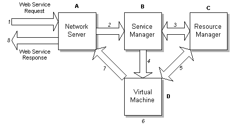

Follow this link for a table of contents.
Follow this link for a version of this page with improved navigation for graphical browsers.


DotGNU Execution Environment
The DotGNU Execution Environment provides the core webservice component of
DotGNU and provides the functionality of accepting, validating and satisfying
web service requests.
The DGEE is implemented over a clean architecture that integrates the
components on the web service execution path, including network servers,
protocols, virtual machines and security mechanisms into a unified,
distributable and scalable application.
In its basic form the DGEE allows the installation and removal of web services
within a repository, accepts XML-RPC requests for these web services and
generates browsable documentation for these web services in HTML and XML form.
The DGEE is implemented as a Goldwater application. Goldwater is a highly
scalable distributed middleware that promotes the building of applications as a
collection of separate but logically connected processes. Goldwater does all
the work of routing messages between these processes as though they were mere
function calls, even if they are distributed across several servers, and
performs queuing and timeouts as necessary.
The DGEE therefore inherites Goldwaters scalability and resilience along with
its management and maintenance features.
Overview
|  |
figure 1.1 - The DotGNU Execution Environment |
A request is processed as follows:
- Service request is received by the Network Server (A) and validated. An example of a network server would be Apache.
- The Network Server passes the request Data and the URI of the web service to the Service Manager (B).
- The Service Manager validates the availability of the web service locally by querying the Resource Manager (C).
- If the web service is available locally, the Service Manager sends the request data and webservice URI to the relevant Virtual Machine (D) for execution.
- The Virtual Machine checks it's internal cache of stored web service code and if not present loads it from the Resource Manager.
- The Virtual Machine executes the web service and has it process the request data.
- The output from the web service is sent back to the Network Server.
- The Network Server returns the web service output to the requesting entity in the same form it received the request (ie over a HTTP connection in the case of processing a HTTP request).
DGEE Module Description
-
The Network Server is responsible for handling the protocol specifics of the
request and reply. It is the entry point into the DGEE and by default is
usually Apache (v1 or v2) which is bound to the DGEE as a client. It may also
be a piece of custom server software designed to handle any arbitrary protocol.
-
The Service Manager is responsible for maintaining the collection of webservices.
It handles the addition and removal of services and controls access to them.
It is the first stage at which the existence of a web service may be discovered,
however this is not to say that the SM is some sort of DNS-esque server. It
is merely the first functional unit on the data path that has knowledge of
what web services are available.
-
The Resource Manager handles the physical storage and retrieval of web services
within the DGEE. It is identified as a logical module in it's own right as
other modules in the DGEE require the functionality that it encapsulates.
Internally the RM hides where and how webservices are stored, allowing them to
be held locally, remotely or in a RAID like distribution without the other
components of the DGEE being aware of these facts. Currently the DGEE stores
webservices locally, but extension of the RM to offer distribution for instance
would be seamless to the rest of the system.
-
The Virtual Machine is the entity within which a web service executes.
VM's would be provided for each bytecode or native format web services are
required to be supported. Currently the DGEE supports Portable.Net and an
experimental Python VM.
Dependencies
The DGEE is dependant on
Portable.NET,
Goldwater (a message based middleware),
phlib (a collection of support functions and classes used by Goldwater and the DGEE),
the expat XML parser,
and the GNU command line processor readline. Copies of these dependencies are provided on the
CD-ROM.
Installing
The DGEE can be
installed from source code or
from a binary package.
Synopsis of Running the DGEE
There are a few steps involved in running a DGEE once you have the necessary
components installed on your machine.
- Configure Apache to load and use mod_dgee.so
- Tune your IPC resources (see the INSTALL file)
- Start the DGEE by starting Goldwater and then booting the DGEE processes
within it. This is achieved through the DGEE specific command dgadmin.
- Install your webservice through the dginstallws command.
- Display some online documentation for your installed webservice, by pointing your browser at the DGMX resource for the webservice (for instance
http://127.0.0.1/wstest.dgmx).
- Point your favorite XML-RPC client at your webservice (try out the Perl and Python examples in the Perl and Python directories of the source distribution).
Further information
For further information on the DotGNU Execution Environment, visit the project's
Web site and
the DotGNU Wiki
Chris Smith - http://www.nfluid.com
Your comments please...
You are invited to add your comments concerning this
at the appropriate
page of the DotGNU Wiki
Verbatim copying and distribution of this entire article are
permitted in any medium or format, provided this notice is
preserved.
This page is
maintained by Norbert Bollow <nb@SoftwareEconomics.biz>
with support from the DotGNU
Developers mailing list.